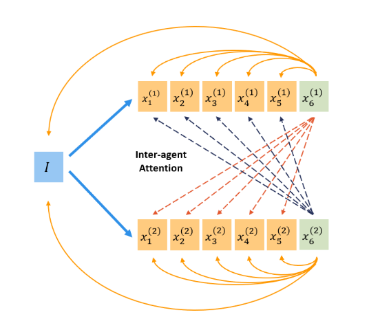

Literature Review: Group Think - Collaborating at Token Level Granularity
This paper introduces Group Think, a novel paradigm where a single LLM generates multiple concurrent reasoning trajectories that adapt to each other at the token level. Unlike traditional multi-agent systems that operate sequentially, Group Think enables real-time collaboration between reasoning threads, potentially reducing latency while improving quality through fine-grained coordination.
Key Insights
The core innovation lies in token-level mutual adaptation between concurrent reasoning threads. Each agent’s next token prediction is conditioned on the partial outputs of all other agents: x(n)_{k+1} = Think(n)_k(I, X(1)_k, …, X(N)_k). This creates a dynamic collaboration mechanism where reasoning trajectories can pivot mid-sentence based on what other threads are generating.
The authors present two practical implementations: one optimized for edge inference (creating artificial batches from N agents for a single query) and another for data center scenarios (interleaving tokens across agents in a single thread). The edge implementation is particularly compelling as it addresses the chronic underutilization of hardware in single-query scenarios typical of personal devices.
The evaluation across three problem categories reveals emergent collaborative behaviors even in models never trained for Group Think. In enumeration tasks, agents spontaneously divide category spaces (i.e., cultural origins for names). In divide-and-conquer problems like Floyd-Warshall, threads naturally partition the computational workload. Most impressively, in programming tasks, agents exhibit “alertness” to avoid duplication, quickly switching focus when detecting overlap with other threads.
The comparison with Independent Sampling isolates the benefits of coordination versus mere parallelization. Group Think shows superior efficiency at scale, though it requires initial token overhead for coordination that makes it comparable to independent sampling in low-latency regimes.
Example
In a programming task requiring multiple components, when two Group Think agents begin implementing the same function, the token-level visibility allows one agent to detect this overlap within a few tokens and immediately pivot to a different component. This fine-grained coordination prevents redundant work that would occur in traditional multi-agent systems operating at turn-level granularity.

Figure: Group Think enables multiple reasoning threads to collaborate at token-level granularity, with each thread adapting dynamically to others' partial outputs through modified attention mechanisms.
Ratings
Novelty: 4/5
The token-level collaboration paradigm represents a significant departure from existing multi-agent approaches. While concurrent generation has been explored, the fine-grained mutual adaptation mechanism is genuinely novel and addresses real limitations of turn-based systems.
Personal Comments
This work represents exactly the kind of paradigm shift that excites me about the current state of AI research. The insight that we can achieve multi-agent benefits within a single model through token-level coordination is both elegant and practical. What particularly impresses me is how the authors identified and addressed the chronic inefficiency of edge inference, since it aims to solve a real deployment problem rather than just testing on benchmarks.
The emergent collaborative behaviors observed in off-the-shelf models suggest we’re only scratching the surface of what’s possible. The spontaneous division of labor in enumeration tasks and the “alertness” to duplication in programming reminds me of how human collaborative problem-solving naturally emerges even without explicit coordination protocols.
However, I share concerns about the redundancy-efficiency trade-off. While the empirical improvements are encouraging, the fundamental question remains: can token-level coordination overcome the inherent overlap that comes with parallel exploration? The comparison with Independent Sampling helps, but I suspect there’s still significant room for optimization, perhaps through more sophisticated attention mechanisms or training objectives specifically designed for collaborative reasoning.
Looking forward, I’m most excited about the potential for training models explicitly for Group Think. The current results using off-the-shelf models are promising, but purpose-built collaborative reasoning models could unlock far more sophisticated behaviors - perhaps even approaching the kind of specialized role differentiation we see in effective human teams.
Enjoy Reading This Article?
Here are some more articles you might like to read next: